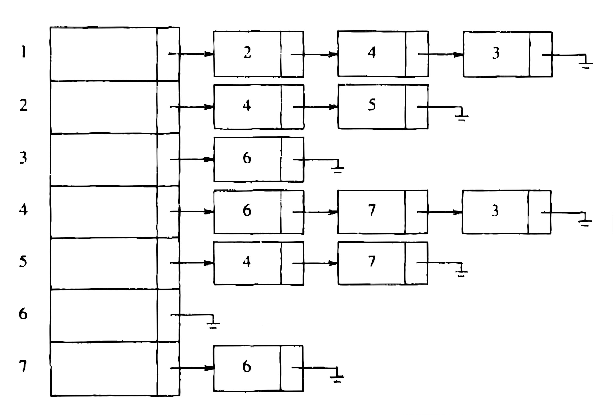
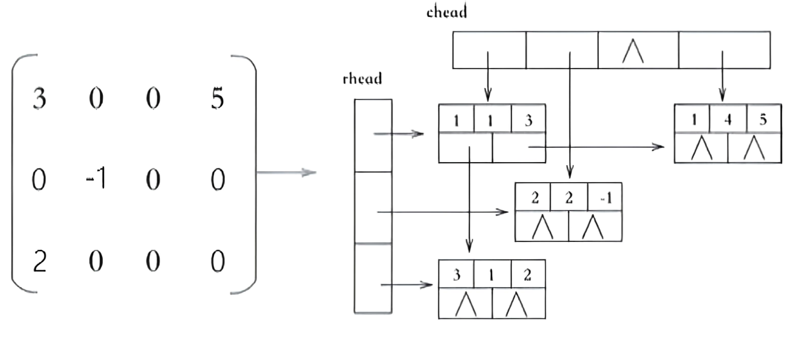
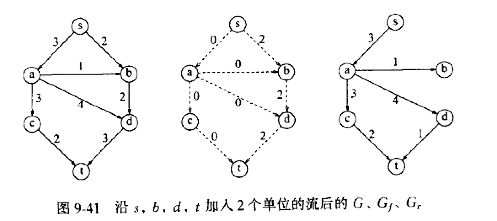
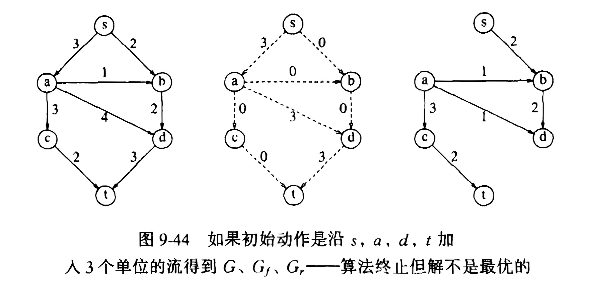
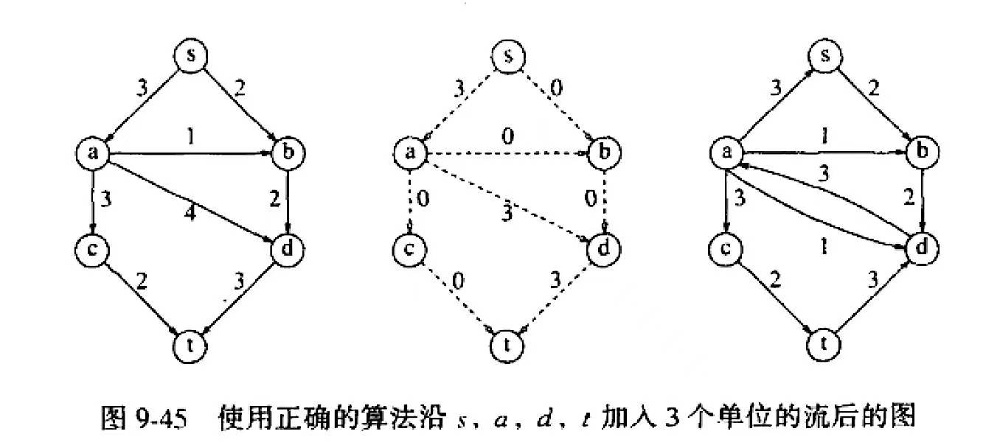
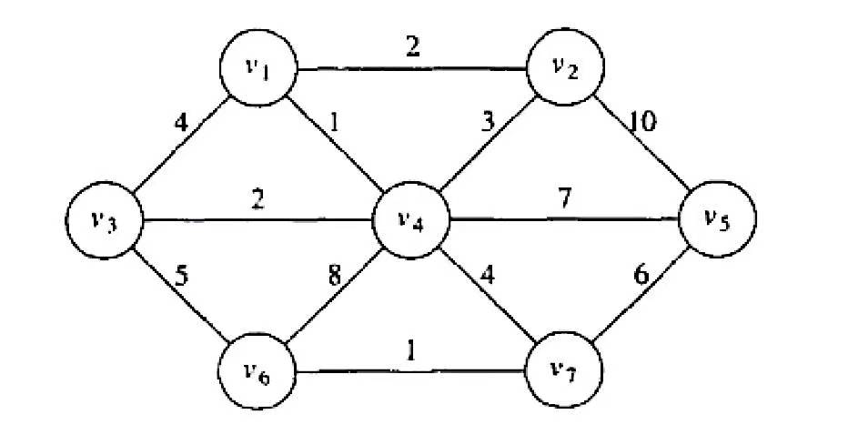
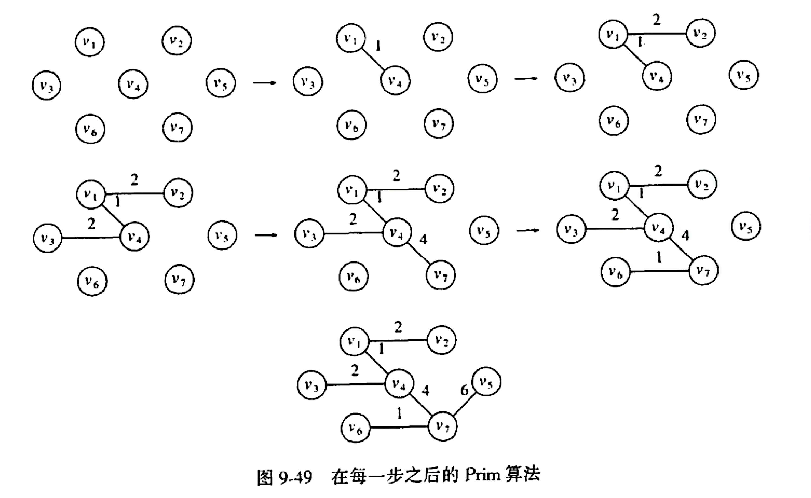
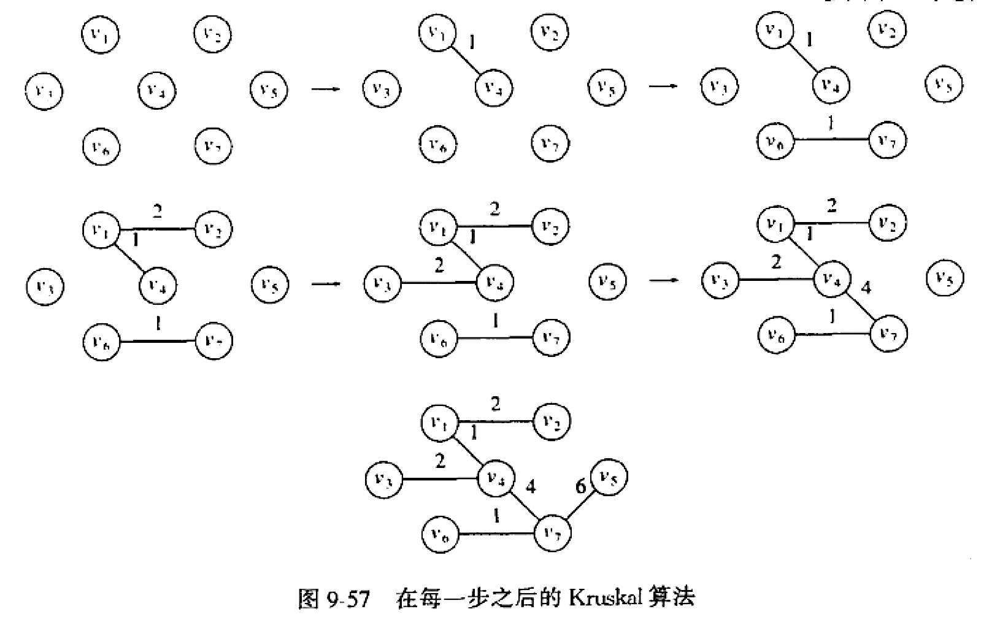
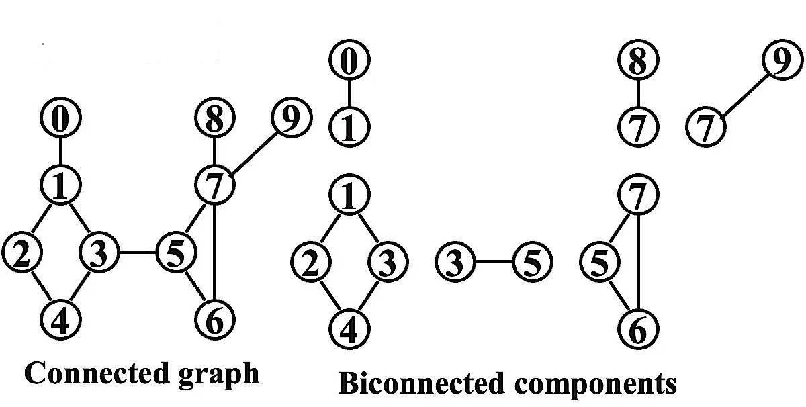

图
Notice!
以下代码均为伪代码！
相关定义¶
-
图
- 图=边+点
- 分类：有向图、无向图
Tips
- 自循环不被允许
- 两点之间多条边不被考虑
-
完全图：边的数量最多
- 路径长度：边的个数
- 简单路径：所有点互异，但是第一个和最后一个可能相同
- 环：第一个点与最后一个相同
- 连通的：无向图每一个顶点到每个其他顶点都存在一条路径
- 强连通的：有向图满足上述性质
- 弱连通的：有向图（不是强连通）去掉方向后的图是连通的
- DAG：有向无环图
- 度（degree）：
- 无向图：一个点与它连接的边的个数
- 有向图：
in-degree、out-degree
图的表示¶
二维数组¶
邻接矩阵
- 对于每条边
(u,v)，A[u][v]=1；不存在该边，则A[u][v]=0 - 如果边有一个权，则等于该权
链表¶
- 邻接表：表示当前节点指向的节点

- 逆邻接表：表示指向当前节点的节点
- 十字链表：正邻接表和逆邻接表的整合

拓扑排序¶
定义：对有向无环图(DAG)顶点的排序
排序方法¶
方法一：简单实现¶
- 时间复杂度：\(O(N^2)\)
- 步骤：
- 找到任意入度为0的顶点
v- 将v加入排序结果 - 移除v的所有出边(邻接顶点入度减1) - 重复直到所有顶点排序或检测到环
| C | |
|---|---|
方法二：队列优化¶
- 时间复杂度：\(O(|V|+|E|)\)
- 优化：建立一个队列，存储当前入度为0的点，如果在排序的过程中入度减为0，则送入队列
最短路径算法¶
无权最短路径¶
-
方法一：
-
变量含义：
T[V].Known：如果是1，表示已经被检查过；如果是零，则未被检查过T[W].Dist：表示从源点\(s\)到当前节点的距离T[W].Path：用于追踪路径，记录当前节点在最短路径中的上一个节点 -
时间复杂度：\(O(|V|^2)\)
-
-
方法二（improvement）：
- 思路：利用队列
- 时间复杂度：\(O(|V|+|E|)\)
- 每个节点最多入队一次
- 对每个节点寻找下一个邻接的节点，每个边最多遍历一次，时间复杂度为\(O(|E|)\)
有权最短路径：Dijkstra算法¶
- 时间复杂度：\(O(|V|^2+|E|)\)
- 寻找最小的不知道距离的节点时间复杂度为\(O(|V|)\)
- 且每个节点都需要寻找一次，总的时间复杂度\(O(|V|^2)\)
- 对每个节点寻找下一个邻接的节点，每个边最多遍历一次，时间复杂度为\(O(|E|)\)
Tips
- 被读取邻接点的节点才会被设置为已知
- 从邻接点中选择未知并且dist较小的进行下一次处理 e.g. 具体例题见PTA/Homework 9
- 时间复杂度：\(O(|V|\log|V|+|E|\log|V|)=O(|E|\log|V|)\)
- 使用优先队列来存储顶点的距离信息
- 寻找距离最小的未知顶点，通过优先队列的
DeleteMin操作实现，时间复杂度为 \(O(\log|V|)\) - 由于每个顶点会被插入优先队列一次，并且每条边会被用于更新距离一次，而更新距离时如果使用DecreaseKey操作，时间复杂度为 \(O(\log|V|)\)，那么与边相关的操作时间复杂度为 \(O(|E|\log|V|)\)
有负权边的图¶
- 思路：利用队列
-
时间复杂度：\(O(|V|×|E|)\)
无环图¶
- 时间复杂度：\(O(|V|+|E|)\)
- 应用：
- 计算最短完成时间EC和最晚完成时间LC
- 最短：借助节点的拓扑顺序
- 最晚：借助节点的倒转拓扑顺序
- 计算最短完成时间EC和最晚完成时间LC
网络流问题¶
- 目标：寻找起点到终点的最大流量
-
一个简单的最大流算法
- 先找一条从起点到终点的路径
- 去掉这条路径之后重复以上步骤

Error!
该算法得到的结果可能是错误的！！！

-
improvement
- 找到一条路径之后不删去，而是加一条与原来反向的边

最小生成树¶
相关定义
- 生成树：包含图的所有点，边的个数是点的个数减一
- 最小生成树：所有边的权重之和最小
Prim 算法¶
- 思路：以点为中心
- 步骤：
- 选取一个点为源点，放入最小生成树
- 遍历当前树邻接的所有点，选择权重最小且不生成回路的边
- 将找到的边和邻接的点放入最小生成树
- 重复以上步骤，直至所有点都放入最小生成树
Kruskal 算法¶
- 思路：以边为中心
- 步骤：
- 将所有边按权重从小到大排序
- 将权重最小的边依次放入图
- 放入的时候判断是否构成回路，构成回路则不放入
- 重复以上步骤，直至边的个数等于点的个数减一
Example
针对以下图寻找其最小生成树

-
Prim 算法

-
Kruskal 算法

深度优先搜索（DFS）¶
基础模版¶
| C | |
|---|---|
无向图¶
| C | |
|---|---|
双连通图¶
-
定义：
- 双连通图：一个连通无向图任意顶点删除后，剩下的图仍然连通
- 割点：删除其之后图不再连通
-
双连通子图

-
利用DFS寻找割点
- 先将图整理为树，添加剩余的边为回边
- 树从上到下编号，记为 \(num[V]\) ，每一条路径从上到下序号依次增大
- 对每一个顶点 \(V\) ，寻找可以到达的最大序号（从该顶点出发，从上至下，遇到回边才能返回），记为 \(low[V]\)
- 如果一个顶点的子节点的 \(low\) 大于等于该顶点的 \(num\) ，则该顶点为割点
欧拉回路¶
- 欧拉回路：连通的无向图每个节点的度均为偶数时，存在一个路径为环，包含图中的所有边，并且不重复
- 欧拉路径：连通的无向图只有两个节点的度为奇数时，存在一个路径不为环，包含图中的所有边，并且不重复